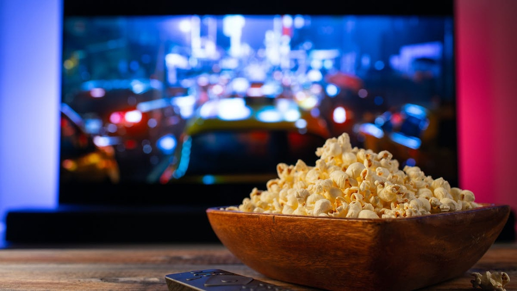
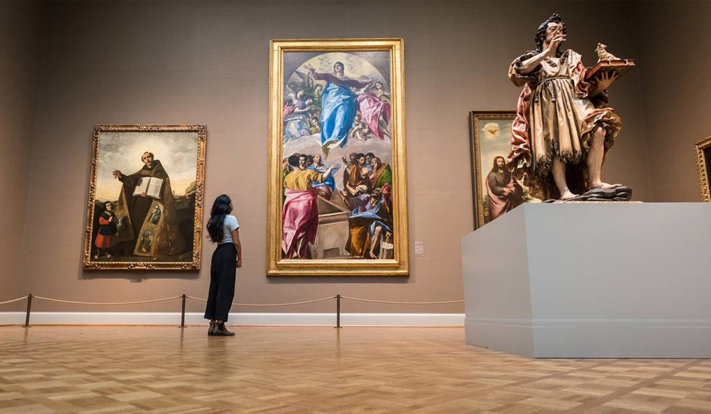

Escuchar musica en ratos libres,asi como bailar,ir a fiestas.
Ver peliculas mientras estoy con mi familia.
Las peliculas que recientemente vi y recomendaria serian:
Soul
Duelo de titanes
3 Metros Sobre el Cielo

Visitar museos en fines de semana junto a mi familia.
Los museos que mas me gustaron los cuales recomendaria que fueran serian:
Museo de TEMPLO MAYOR
Museo de CERA
Museo de LA CARICATURA
Aunque hay muchos museos los cuales tengo ganas de visitar como lo son por ejemplo;
Museo de EL CHOCOLATE
Museo de LA GASTRONOMIA YUCATECA
Museo de EL TEQUILA Y EL MEZCAL

Me gustan los deportes aunque no todos los practico, pero los e visto en programas o peliculas como por ejemplo:
BASQUETBALL
FUTBOLL
BOX
MUAI TAI
Ver tutoriales de platillos,postres,bebidas y tratar de realizarlos.
Ultimamente e visto tutoriales para preparar cocteles y parte de ellos los e realizado,aunque hay varios que no me han salido bien los sigo intentando hasta poder mejorarlos.
Asi como tambien el tratar de hacer Latte Art.
Estar informado a diferentes temas (Ultimamente) para no quedarme sin tema de conversacion.
en muchos de los casos cuando no se que significa alguna palabra o algun tema no estoy muy bien informado hago lo posible por investigarlo.
Jugar con mis mascotas, actualmente tengo 3 perritos.
Los cuales sus nombres son;